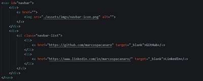

Criar um repositório público no meu perfil do Github com o nome {100-days-of-code} ou
{100-dias-de-codigo} e adicionar um README com o manifesto do desafio da Tecnogueto.

A iniciativa 100 Days of Code ou 100 Dias de Código é um projeto criado pela Tecnogueto, com o objetivo
de estimular desenvolvedores iniciantes a criar o hábito de estudar diariamente. A cada dia, um novo
desafio é enviado para os programadores, que têm até o próximo dia para concluí-lo.
É possível conferir os desafios através do Discord oficial da Tecnogueto, além de entrar em contato com outros
desenvolvedores, mentores e materiais de apoio. Vamos nessa?
Criar um repositório público no meu perfil do Github com o nome {100-days-of-code} ou
{100-dias-de-codigo} e adicionar um README com o manifesto do desafio da Tecnogueto.
Estruturar uma página web no padrão HTML5, contendo as seguintes tags: header, footer, main section e
nav. Os conteúdos podem ser fictícios e o uso do CSS é opcional. Neste caso, pretendo usar esta página
para
exibir imagens da evolução dos 100 desafios.


Fazer o commit e push do primeiro challenge para o repositório através do terminal. Depois, criar uma
nova branch e mover um dos commits para a nova branch. Após movido, retornar o projeto para a branch
original.

Estruturar uma página web no padrão HTML5 contendo no mínimo 5 elementos HTML diferentes. Neste caso, a
página já possui os seguintes elementos: div, ul, li, p e a.

Estruturar uma página web no padrão HTML5 contendo um formulário com no mínimo 5 campos, utilizando as tags semânticas: field, legend, aria-label, type e for. Acesse clicando aqui.